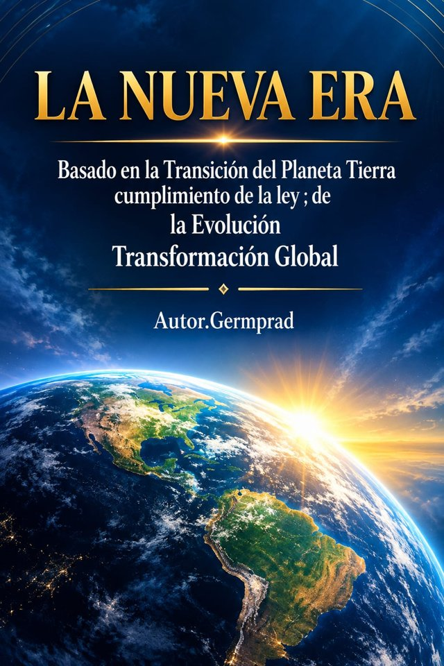
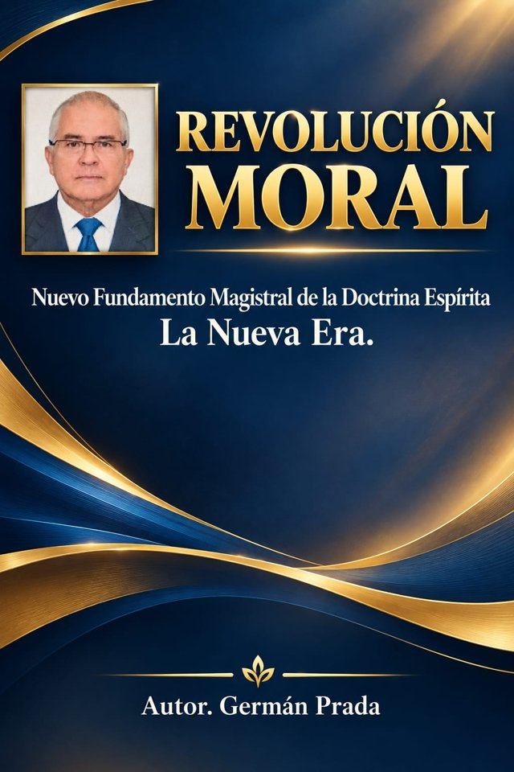
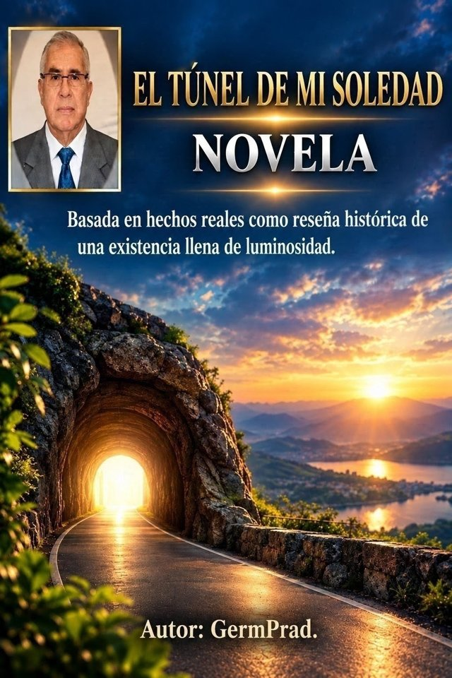
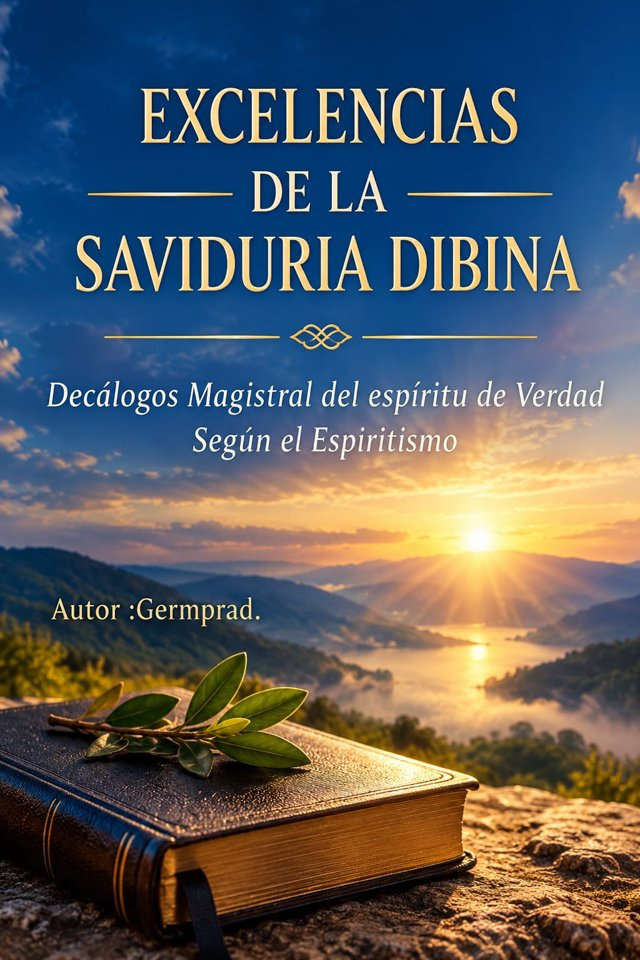

PDF
SOCIEDAD · ESPIRITUALIDAD
Revolución Moral
Una obra que plantea una reflexión sobre los cambios sociales, morales y religiosos.
$36.000 COPComprar por WhatsApp ↗
LECTURA · REFLEXIÓN · CONOCIMIENTO
Explora las obras digitales de Germán Prada y encuentra nuevas perspectivas sobre espiritualidad, sociedad y transformación personal.


UN CATÁLOGO PARA EXPLORAR
Conoce las obras disponibles, consulta sus detalles y elige el título que quieras explorar. Cada ficha reúne la información esencial para ayudarte a decidir.
LAS OBRAS
SOCIEDAD · ESPIRITUALIDAD
Una obra que plantea una reflexión sobre los cambios sociales, morales y religiosos.
ESPIRITUALIDAD
Una reflexión de carácter doctrinal y filosófico sobre la transformación moral.
ESPIRITUALIDAD
Una obra sobre el cumplimiento de una nueva era planetaria desde la perspectiva del autor.
ESPIRITUALIDAD
Explora los fundamentos de la doctrina espírita según el enfoque presentado en la obra.
ESPIRITUALIDAD · SOCIEDAD
Una reflexión sobre la creación y el propósito del mundo desde la perspectiva de la obra.
SOCIEDAD · ESPIRITUALIDAD
Una mirada a la transición, la evolución y la transformación global según el autor.
SALUD · TESTIMONIO
Publicación que presenta las ideas y afirmaciones de su autor sobre medicina natural.
SALUD · HOMEOPATÍA
Una publicación que expone la perspectiva del autor sobre homeopatía y salud.
No encontramos libros con esa búsqueda. Prueba con otro título o categoría.
La compra y la entrega del PDF se coordinan por WhatsApp. Los títulos relacionados con salud presentan el contenido y las afirmaciones de su autor y no sustituyen la orientación de profesionales sanitarios.
FRONTISPICIO DE UN NUEVO AMANECER
La cuarta revelación espírita: un mensaje sobre el amanecer de un mundo nuevo y la transformación que lo acompaña.
Ver las obras ↗SOBRE DISTRILIBROS
Distrilibros reúne obras de Germán Prada en un espacio pensado para que puedas descubrir títulos, revisar sus detalles y consultar cómo adquirirlos en formato digital.
Ver las obras ↗MENSAJES DISTRILIBROS


¿TE INTERESA ALGÚN TÍTULO?
Elige un libro del catálogo, escríbenos por WhatsApp y te indicamos cómo pagar y recibir tu PDF.
¿Tienes dudas antes de comprar?
Escribir por WhatsApp ↗Coordinamos el pago y la entrega del PDF directamente por WhatsApp.